| 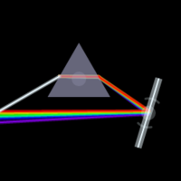 Photon Photon is an optics-based puzzle game I've been developing using JavaScript and Raphaël. The graphics are handled entirely using SVG, which provides crisp and clean visualizations at any resolution. The goal of each level is to arrange the mirrors, filters, and prisms provided to guide the correct colored beams of light to the corresponding colored goals. Currently the game runs entirely on the client machine, but I plan to add persistence across browser sessions and users in the future. |
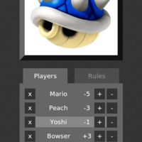 Mario Kart Frolf A group of friends and I like to play this game called frisbee golf. We've been playing every Saturday morning for about 5 years now (some of us for even longer). We're also avid videogamers, and most of us can remember spending a lot of our childhoods playing a particular videogame: Mario Kart. Then we got to thinking out loud how funny it would be to add Mario Kart power-ups to our frolf games. Bananas making players throw with their opposite hand. Lightning making everyone throw while standing on one leg. Then we said, "hey, we should actually DO this!" So, I took it upon myself to waste some more time on Mario Kart, and wrote a small app that took care of player scores and assigning power-ups. |
 Elemental Sound Ever wondered what argon sounds like? How about rubidium or ionized uranium? After watching Minute Physic's The Sound of Hydrogen video and the accompanying tutorial, I decided to replicate their results, but also fill in the rest of the periodic table. I wrote a Python script to scrape the data from the NIST website, wrote a MatLab script to generate the sounds from that, and then encapsulated it all into what you see here. Elemental Sound Ever wondered what argon sounds like? How about rubidium or ionized uranium? After watching Minute Physic's The Sound of Hydrogen video and the accompanying tutorial, I decided to replicate their results, but also fill in the rest of the periodic table. I wrote a Python script to scrape the data from the NIST website, wrote a MatLab script to generate the sounds from that, and then encapsulated it all into what you see here. |
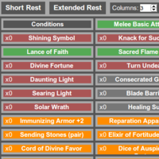 D&D Character Manager I wrote this app when I was frequently playing D&D (4th edition) and shuffling around pages and pages of powers, abilities, skills, etc. for my character. I actually coded this as a Chrome extension, which you can obtain from GitHub here. The app reads .dnd4e files (generated from the online WOTC character generator) from the local data/ directory, and displays the information in collapsible, tidy boxes, along with functionality for keeping track of current HP, number of healing surges, status effects, etc. Coded entirely in HTML, CSS, and JavaScript using the d3 library. |
| 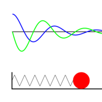 Harmonic Oscillator I created this small demonstration of a mass-spring system the first time I taught introduction to differential equations. I wanted to to demonstrate how the motion of a mass-spring system is affected by its three main parameters: the mass, the spring constant, and the damping coefficient. You can change these parameters in the text boxes, and click-drag the mass to observe the effects. The blue line represents the position of the mass, and the green line represents its velocity. Written using JavaScript and the HTML5 canvas element. |
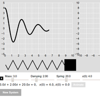 Harmonic Oscillator 2 This is an updated demonstration of mass-spring systems, based on my first attempt. This demo allows for multiple systems so you can directly compare the similarities and differences in the the resulting motion of the masses. The left graph has a plot of the mass' position over time, and the right graph is a plot of the motion in phase space (position in the x-direction, velocity in the y-direction). Parameter values are taken from HTML5 slider inputs, which automatically update both the differential equation and the plots. You can also watch an animation of the motion of mass. Coded entirely in HTML, CSS, and JavaScript using the d3 library. |
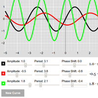 Sine Curves This is a small demonstration I made for an introductory calculus course to aid in understanding the effect of amplitude, period, and phase shift of a sine curve. It allows for comparing multiple curves on the same graph. The parameters can be changed using the HTML5 sliders below the graph. Coded using JavaScript and the d3 library. |
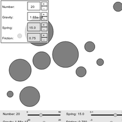 Squishy Ball Demo This is a demonstation of spring-based balls interacting in a box. I created this more as an exercise to familiarize myself with HTML5 canvas. Parameters of the system are controlled by clicking the "+" and "-" in the control box on the upper left. The "spring" and "friction" parameters control the spring constants and damping coefficients of the spring system that is created each time two balls contact. You can move a given ball by click-dragging on it. The sliders at the bottom were my initial attempts to create my own slider controls using HTML5 canvas. |
| 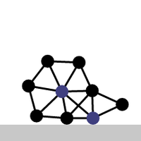 Spring Play Create systems of springs by clicking two balls and pressing "s" to create a spring between them. You can also change the look of the springs by pressing "e", change their length by pressing the up and down keys, and also turn off gravity by pressing "g". Created entirely with HTML5 canvas and JavaScript. |
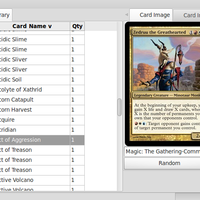 Magic Card Database This is database-driven collection organizer and card searcher for the CCG Magic: The Gathering. I used to play pretty avidly, and when I couldn't find any decent free collection organizers, I decided to pick up Python and attempt to create my own. The application makes use of wxPython for the GUI, and the sqlite library that comes with every installation of Python. I made searching a strong feature of the code, as I wanted to be able to construct decks from the entire Magic library. To import all of the information for all cards, I wrote a Python script to scrape the WOTC website, which made use of the BeautifulSoup library for parsing the HTML information. This is still a work in progress, so I have yet to release it into the wild. |
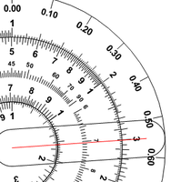 Circular Slide Rule A demo of a working circular slide rule. Try dragging the pointer and the inner stator. This project eventually led to a real life object. Coded entirely in HTML5 canvas and JavaScript. |
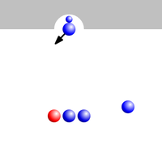 Bubble Spinner This was my initial attempt at making a replica of Bubble Spinner. This was one of my first forays into using HTML5 canvas, so I never got around to finishing it before moving on to other projects. |
| 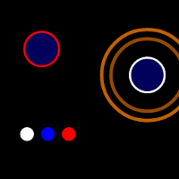 Ball Game This is a small game that I developed. The object of the game is to maneuver the white ball (using the wasd keys) into the other balls so they land into their appropriately colored wells. Once a ball is in the correct well, a timer counts up... forever. That's as far as I got. |
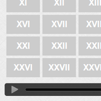 Goldberg Variations Back when I had a Mac, I liked to occasionally noodle around in GarageBand. One day I decided to transpose all of the Goldberg variations from a copy of the sheet music that I found. |
 Home
About
Projects
Home
About
Projects

 Last modified on Wednesday, January 08, 2014 at 10:29 PM
Last modified on Wednesday, January 08, 2014 at 10:29 PM